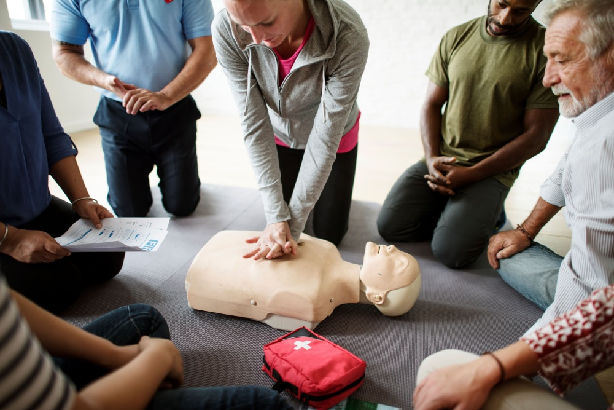

Cardiac arrest is one of the leading causes of death worldwide, yet many people feel unprepared to act when it happens in front of them. The truth is, you don't need to be a medical professional to make a life-saving difference. Here are five essential CPR tips that every person should know.
1. Call Emergency Services First
Before starting CPR, always call your local emergency number — 911 in the U.S. or 112/199 in Nigeria. If someone else is nearby, ask them to make the call while you begin chest compressions. Every second counts, and professional help needs to be on the way as soon as possible.
2. Push Hard, Push Fast
Effective chest compressions are the cornerstone of CPR. Place the heel of your hand on the centre of the person's chest, interlace your fingers, and push down at least 2 inches deep. Aim for a rate of 100–120 compressions per minute — roughly the tempo of the song "Stayin' Alive" by the Bee Gees.
"You can't do CPR wrong if the alternative is doing nothing. Any attempt at chest compressions is better than standing by."
3. Don't Be Afraid to Act
Many bystanders hesitate because they fear doing something wrong. But in a cardiac arrest, the person is already in the worst possible situation — their heart has stopped. Your compressions are the only thing keeping blood flowing to their brain. Act with confidence.
4. Use an AED If Available
Automated External Defibrillators (AEDs) are increasingly available in public spaces like airports, shopping malls, and schools. If one is nearby:
- Turn it on and follow the voice prompts
- Attach the pads to the person's bare chest as shown in the diagram
- Stand clear and allow the device to analyse the heart rhythm
- Deliver a shock if advised, then resume compressions
5. Keep Going Until Help Arrives
CPR is physically demanding, but it's critical to maintain compressions until emergency medical services arrive or the person shows signs of recovery. If you're getting tired, switch with another trained bystander if possible. Consistent, uninterrupted compressions dramatically improve survival rates.
"The greatest risk in a cardiac emergency isn't doing CPR imperfectly — it's not doing it at all."
At HeartSavers Africa, we believe that everyone deserves access to this life-saving knowledge. That's why all of our training sessions are completely free. Find an upcoming training near you →